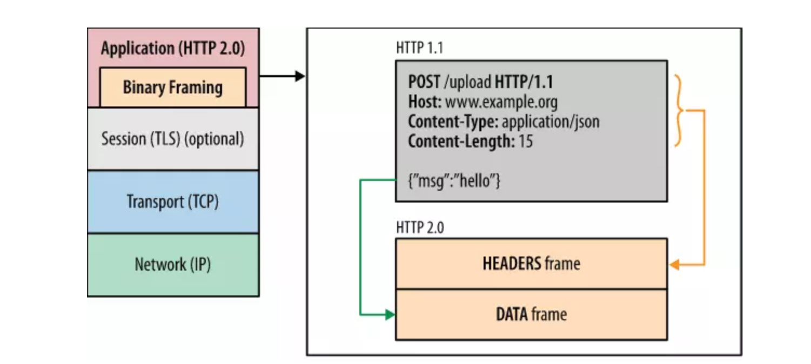
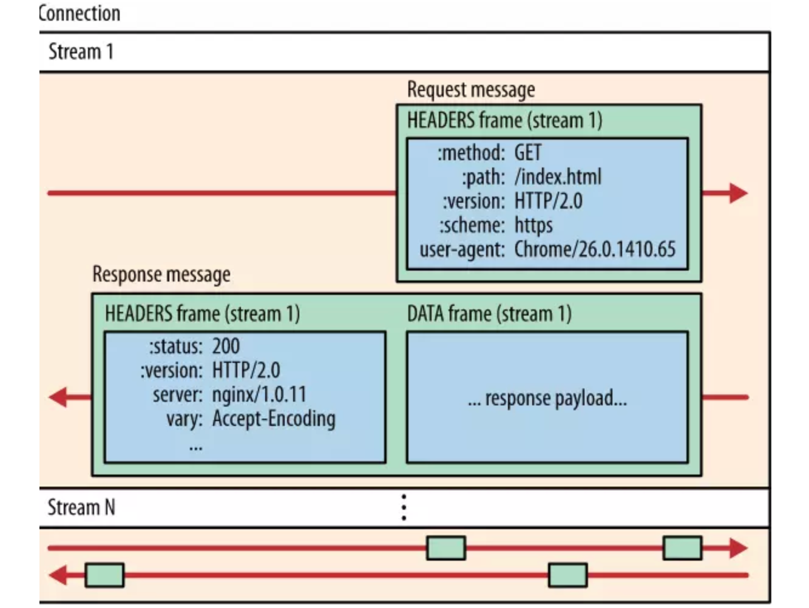
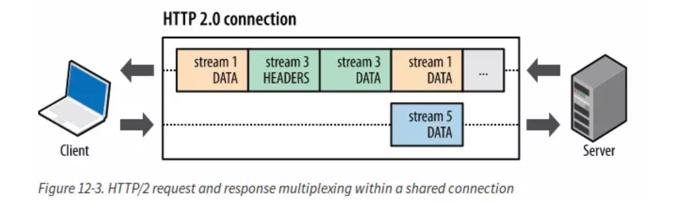
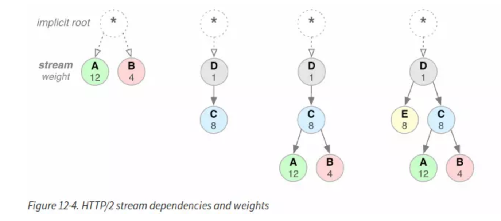
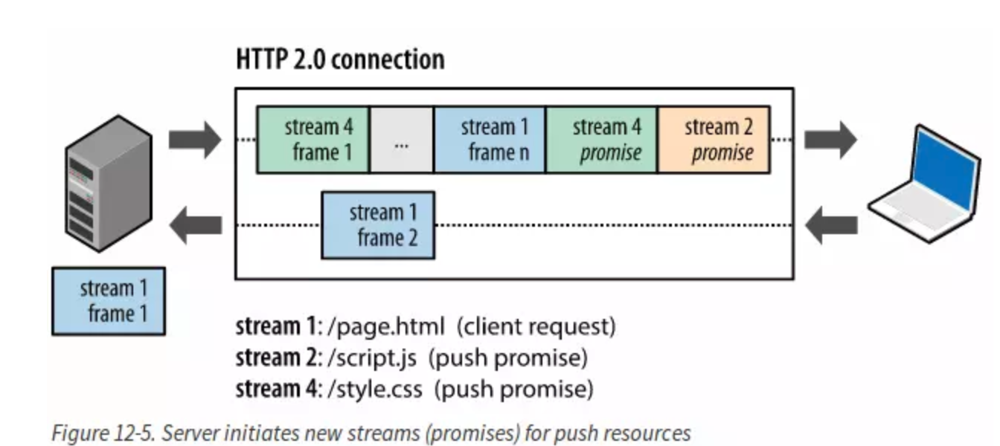
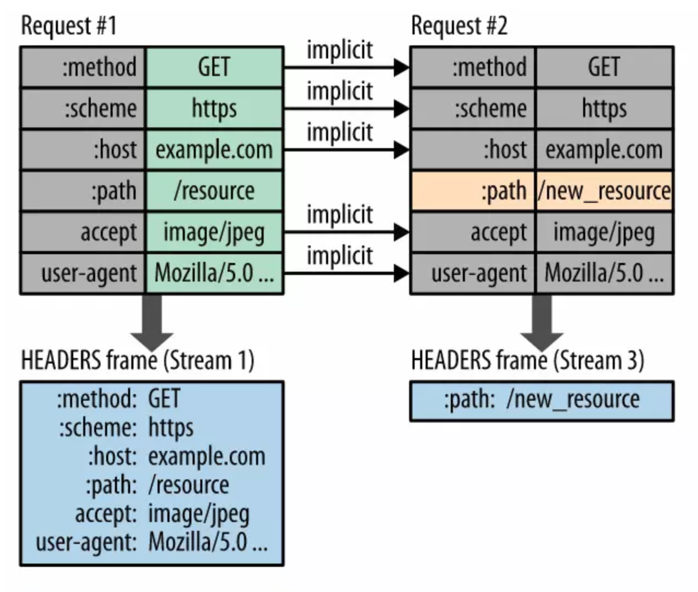
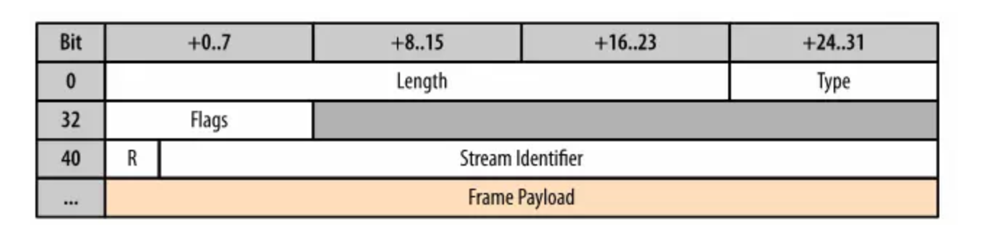
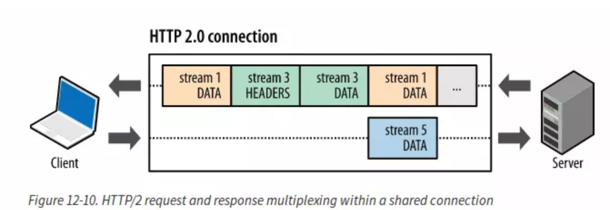

我在想了解HTTP/2的时候，查阅了很多资料，发现这篇很好，是外国的文章．我翻译过来，加入自己的一点理解．
HTTP/2 更简单,高效,强大.它在传输层解决了以前我们HTTP1.x中一直存在的问题.使用它可以优化我们的应用.HTTP/2 的首要目标是通过完全的请求,响应多路复用,头部的压缩头部域来减小头部的体积,添加了请求优先级,服务端推送.为了支持这些特性,他需要大量的协议增加头部字段来支持,例如新的流量控制,差错处理,升级机制.而这些是每个web开发者都应该在他们的应用中用到的. HTTP/2并没有在应用中改变HTTP的语义,而是通过在客户端和服务端传输的数据格式(frame)和传输.它通过在新的二进制帧层控制整个过程以及隐藏复杂性,而这不需要改变原来有的东西就可以实现.
HTTP是因特网广泛普及和采纳的应用层协议.它的易于实现性同样有了对应用性能方面的影响.HTTP/1.x 需要开启多个连接来实现并发和减少潜在影响.HTTP/1.x 的头部没有压缩,造成不必要的网络拥塞.HTTP/1.x没有应用资源优先级,导致重要Tcp连接的糟糕使用. 它的好处如下;
HTTP/2 enables a more efficient use of network resources and a reduced perception of latency by introducing header field compression and allowing multiple concurrent exchanges on the same connection… Specifically, it allows interleaving of request and response messages on the same connection and uses an efficient coding for HTTP header fields. It also allows prioritization of requests, letting more important requests complete more quickly, further improving performance. The resulting protocol is more friendly to the network, because fewer TCP connections can be used in comparison to HTTP/1.x. This means less competition with other flows, and longer-lived connections, which in turn leads to better utilization of available network capacity. Finally, HTTP/2 also enables more efficient processing of messages through use of binary message framing. HTTP2.0并没有改变之前HTTP的语义,也就是说高层的Api并没有改变,它是在底层通过二进制frame来改变性能的.
性能提升的核心在于二进制帧层.它指HTTP消息在客户端和服务端如何封装和传输.

这一层指一个设计选择，它在socket接口之间采用一种更好的编码机制，而高层的Api提供给我们的应用。与HTTP1.x的采用的换行符分隔文本不同，HTTP/2 消息被分成很小的消息和frame,然后每个消息和frame用二进制编码。客户端和服务端都采用二进制编码和解码。HTTP/1.x 的客户端不能与只有HTTP/2的服务端通信。幸运的是，我们的应用还没意识到这些改变。客户端和服务端能够很好的处理这些帧。
ASCII 协议能够很容易的看出来和开始使用。然而它们是没有效率的，且很难正确设计：可选的空白，改变终止序列和其他的毛病使得协议很难区别出payload。虽然二进制协议用起来需要做很多工作，但是它们能表现出更好的性能。
接下来介绍二进制帧机制来明白数据如何在客户端和服务端交换的。
流：已经建立的连接之间双向流动的字节，它能携带一个至多个消息。 消息：一个完整的帧序列，它映射到逻辑的请求和响应消息。 帧：在HTTP/2通信的最小单元。每个桢包括一个帧头，里面有个很小标志，来区别是属于哪个流。
这是 HTTP/2 协议提供高性能的基础。
在HTTP/1.x中,用户想要多个并行的请求来提高性能,但是这样必须得使用多个TCP连接.这样的操作是属于HTTP/1.x 发送模型的直接序列.它能保证在每次连接中在一个时间点只有一个响应被发送出去.更糟糕的是,它使得队头阻塞和重要TCP连接的低效使用. 在HTTP/2中,新的二进制帧层,解除了这个限制.使得所有的请求和响应多路复用.通过允许客户端和服务端把HTTP消息分解成独立的帧,交错传输,然后在另一端组装.

图12-3显示了在一次连接中的多个流.客户端传输数据帧到服务端(Stream5).服务端传输交错的帧序列(Stream1,Stream3)到客户端.此时,同时存在并行的3个流. 能够把HTTP消息分解成交错的帧,并在另一端组装它们是HTTP/2中一个非常重要的提高.事实上,它引起了一种波浪效应使得web技术的全栈在性能上有很大的提升.它有以下作用:
新的二进制帧层解决了HTTP/1.X中头部阻塞的问题.在并行处理和传输的请求和响应不再需要多个连接.这使得我们的应用更简单,快捷和便宜.
为了能方便流的传输顺序,HTTP/2.0提出,使每个流都有一个权重和依赖.
流权重和依赖的结合使客户端可以构造和通信一个优先级二叉树来表达它更想得到哪种响应.然后服务端可以按权重分配硬件资源(CPU,内存).

image.png
在HTTP/2 ,一个流的依赖可以显式用其他流的标志来表达,如果省略了标志,则说明它的依赖是根流.一般来说,父流应该在它的依赖流之前分配资源,例如D应该是C之前被发送.依赖于同一父节点的应该按照他们的权重分配资源.例如A结点的权重为12,它的兄弟结点B的结点的权重为4.然后按比例分资源,A占12/16,B占4/16.如上面所述,流的依赖和权重提供了一种很好的表达式语言来表达资源的优先级.但是我们应该明白,,流的依赖和权重只是提供了一种传输偏好,而不是说一定是这样的比例.
HTTP/2.0的连接是持久的,每个源仅仅需要一个连接.大部分HTTP的传输是短的,并且突然的.然而TCP连接却适合长期存活的,批量的数据传输.通过利用相同的HTTP/2 连接,既能够充分利用TCP连接,也能减小整体协议的头部.更进一步来说,更少的连接内存的占用以及全连接路径的处理过程.向HTTP/2的转移不仅减少了网络潜在因素,更减少了操作代价.
Tips:减少连接,同时也提高了HTTPS的性能,因为仅需要更少的TLS层的握手.
流量控制是一种机制,用来阻止发送者发送大量的接收者不需要,或者没能力处理的数据.接收者可能会在重负下很繁忙,或者只愿意分配固定的资源给特定的流.例如,客户端可能以高的优先级请求大量的视频数据,然后用户暂停了视频,那么客户端现在想要停止或者减少服务端的传输来避免取和缓存没必要的数据.或者一个代理服务器连接有很快的下流,很慢的上流,同样的也要控制以多大的流速传输数据,从而匹配上流的速度,从而控制资源的使用.
这些需求可能让你想起了TCP流量控制,由于HTTP/2的那些流是在一个TCP的连接上.那么TCP连接不够细粒度,也没能提供应用级的API来控制单个流的传输.为了应对这种情况,HTTP/2提供了一系列的简单修筑块,来允许客户端和服务端实现他们自己的流级别的,连接级别的流量控制.
HTTP / 2没有规定用于实现流量控制的任何特定算法。相反，它提供了简单的构建模块并将实现推迟到客户端和服务器，这可以用它来实现自定义策略来调节资源使用和分配，以及实现新的传输功能，这可能有助于提高Web应用程序真实性和感知性。
例如，应用程序层流控量制允许浏览器仅提取特定资源的一部分，通过将流量控制窗口降至零来暂停提取，然后稍后恢复 - 例如，获取预览或第一次浏览图像，显示图像并允许进行其他高优先级操作取来操作，并在关键资源完成加载后又开始取。
HTTP / 2的另一个强大的新功能是服务器为单个客户端请求发送多个响应的能力。也就是说，除了对原始请求的响应之外，服务器还可以向客户端推送额外的资源（图12-5），而不需要客户端明确请求每一个资源！

image.png
HTTP / 2脱离了严格的请求 - 响应语义，并支持一对多和服务器启动的推送工作流程，在浏览器内部和外部打开全新的交互可能性。这是一个启动功能，对于我们如何考虑协议以及在何处以及如何使用协议，都会产生重要的长期影响。
为什么我们需要在浏览器中使用这种机制？一个典型的Web应用程序由几十个资源组成，所有这些资源都是客户端通过检查服务器提供的文档发现的。因此，为什么不消除额外的延迟并让服务器提前推送相关资源？服务器已经知道客户端需要哪些资源;这是服务器推动。 事实上，如果您曾经通过数据URI将CSS，JavaScript或任何其他资产内联到一起（请参阅资源内联），那么您已经有了服务器推送的实践经验！通过手动将资源内联到文档中，实际上，我们将该资源推送到客户端，而无需等待客户端请求。通过HTTP / 2，我们可以获得相同的结果，但是具有额外的性能优势：
每个推送的资源都是一个流，与内联资源不同，它允许客户端对其进行单独复用，优先化和处理。由浏览器执行的唯一安全限制是推送资源必须遵守同源策略：服务器必须对提供的内容具有权限。
每个HTTP传输都包含一组描述传输资源及其属性的标题。在HTTP / 1.x中，此元数据始终以纯文本形式发送，并且每次传输的开销都会在任何位置增加500-800字节，如果使用HTTP Cookie，则会增加数千字节。为了减少这种开销并提高性能，HTTP / 2使用两种简单但强大的技术使用HPACK压缩格式(要了解这个算法,可以参考这篇文章https://imququ.com/post/header-compression-in-http2.html)来压缩请求和响应头元数据：
霍夫曼编码允许单个值在传输时被压缩，并且先前传输值的索引列表允许我们通过传输索引值来编码重复值（图12-6），索引值可用于有效地查找和重建完整头部键和值。

作为进一步优化，HPACK压缩上下文由静态和动态表组成：静态表在规范中定义，并提供所有连接可能使用的常见HTTP头字段的列表（例如，有效头名称）;动态表最初是空的，并基于特定连接内的交换值进行更新。因此，通过对以前未见过的值使用静态霍夫曼编码，并将索引替换为已存在于客户端和服务端静态或动态表中的值的索引，可以减少每个请求的大小。
所有HTTP / 2改进的核心是新的二进制长度前缀成帧层。与以换行符分隔的纯文本HTTP / 1.x协议相比，二进制框架提供了更紧凑的表示形式，可以更高效地处理并更容易正确实现。 一旦建立了HTTP / 2连接，客户端和服务器就通过交换帧来进行通信，这些帧用作协议内最小的通信单元。所有帧共享一个共同的9字节头（图12-7），其中包含帧的长度，类型，标志位字段和31位流标识符。

从技术上讲，长度字段允许每帧高达字节（〜16MB）的有效载荷。但是，HTTP / 2标准将DATA帧的默认最大有效负载大小设置为每帧字节（〜16KB），并允许客户端和服务器协商较高的值。更大并不总是更好：较小的帧大小能够实现高效的多路复用并将头部阻塞降至最低。
掌握了不同帧类型的知识后，我们现在可以重新看下我们前面在请求和响应复用中遇到的图（图12-10）并分析HTTP / 2交换：

当然，上述分析基于实际HTTP / 2交换的简化表示，但它仍然说明了新协议的许多优点和特点.